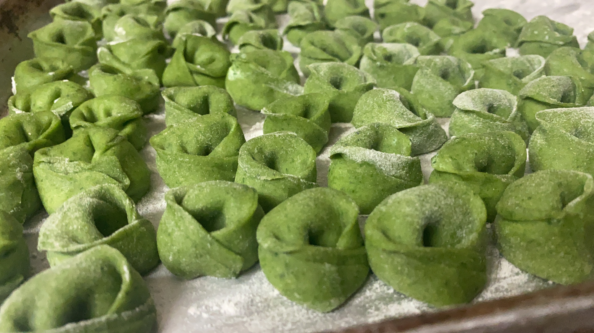

Spinach Tortellini
Description
This tortellini is made with an egg-based dough, just like grandma used to make. It has spinach added to the dough for both color and flavor. The filling is also made with spinach. This makes pasta healthy, right?
Ingredients (dough)
- 3 eggs
- 3 cups flour, divided
- 5 oz spinach
Ingredients (filling)
- 1 container (15oz or smaller) ricotta
- 1/2 cup grated parmesan
- 2-3 oz spinach
- pinch of nutmeg, freshly grated
Tools
- A pan or plate which can fit in the freezer
- Recommended: parchment paper, silicone mat, or some other freezer-friendly product to prevent it sticking to the pan/plate
- Recommended: a pasta rolling machine (up to setting #6)
- A piping bag or sandwich bag and pair of scissors
- A knife
- A large pot for boiling water
- A food processor
Instructions
- First, we will make the dough. Crack 3 eggs into a food processor. Add all of the spinach. Blend together until the spinach is very finely cut up.
- Add 1 cup of flour. Blend until just incorporated.
- Gradually add more flour in 1/4 cup increments (or smaller) until the dough is barely holding together, and is not sticky to your touch.
- If the dough is too dry, add a few drops of water until it holds its shape.
- Wrap the ball of dough with saran wrap. Let it rest for at least 30 minutes.
- While dough is resting, blend all filling ingredients in a blender or food processor until well incorporated.
- Add the filling to a piping bag or simply a plastic bag with the corner cut off.
- After dough has rested at least 30 minutes, roll it into a very thin sheet and cut it into squares about 1 inch per side.
- Pipe a very small amount of filling onto each square. See picture:
- Fold the dough into a triangle with the filling inside. Press the edges firmly so the filling stays in.
- Starting from the base of the triangle (where the filling is), loosely roll the base up to the point of the triangle. The dough does NOT need to stick together.
- Notice which side the "point" of the triangle now is, relative to the body of the tortellini. On the side opposite the point, bring the two "legs" together and press the tips firmly together. It is recommended you wrap the two "legs" around a finger to preserve the classic round shape.

- Place the assempled tortellini on a baking sheet or small dish - they need to be frozen for a couple of minutes for easier handling.
- Once the tortellini are made, bring a large pot of salted water to a boil.
- Dump a couple handfuls of slightly (or totally) frozen tortellini into the water. Boil until they are all floating, which can take 5 to 10 minutes depending on how stuffed and how frozen they are. Remove them and eat!